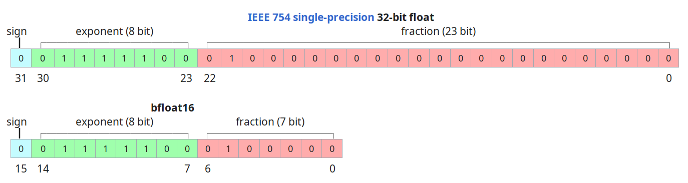

— I'm not an ML/AI expert.
— I like ClickHouse.
So, when I do AI — I do it in ClickHouse!
— run AI models inside ClickHouse.
— inference, not training.
— apply ClickHouse for semantic search.
-- user defined regular functions:
SELECT myFunction(args)
-- user defined table functions:
SELECT * FROM executable('script', (SELECT ...))
-- user defined dictionary sources:
CREATE DICTIONARY my_dict ... ENGINE = Executable('script')
SELECT dictGet('my_dict', 'attr', key);
1. SQL User Defined Functions:
CREATE FUNCTION countSpaces AS
(str) -> length(str) - length(replaceAll(str, ' ', ''));
SELECT countSpaces('Hello, world!');
— work for simple expressions;
— no recursion, no complex logic;
— lightweight and easy to use;
Not suitable for ML.
2. Executable UDFs:
cat /var/lib/clickhouse/user_scripts/countSpaces.py
#!/usr/bin/python3
import sys
for arg in sys.stdin:
print(arg.count(' '))
2. Executable UDFs:
cat /etc/clickhouse-server/my_function.yaml
function:
type: executable
name: countSpaces
format: TabSeparated
command: 'countSpaces.py'
return_type: UInt32
argument:
type: String
A script is run for every block of data.
The block of function arguments is written into stdin of the script.
The block of returned values is read from the stdout of the script.
Nice stuff:
— batching: the script is run for a block of (65k rows by default);
— parallelism: if a query is processing by multiple threads,
multiple scripts will be run in parallel;
— configuration is reloaded in runtime;
SELECT countSpacesSQL(district) FROM uk_price_paid;
-- 1.30 billion rows/s.
SELECT countSpacesExecutable(district) FROM uk_price_paid;
-- 40.70 million rows/s.
— allow any programming languages;
— run in isolated process;
— slower due to data marshalling;
Maybe suitable for ML?
type: executable
— launch the script for every block of data, wait for it to finish.
type: executable_pool
— launch the script, keep it running indefinitely,
pipe the blocks and read the results.
Avoids initialization cost.
Allows to limit the number of concurrent processes.
| executable | executable_pool |
|---|---|
#!/usr/bin/python3
import sys
for arg in sys.stdin:
print(arg.count(' '))
|
#!/usr/bin/python3
import sys
for arg in sys.stdin:
print(arg.count(' '))
sys.stdout.flush()
|
| 40.70 million rows/s. | 402.77 million rows/s. |
| send_chunk_header: 0 | send_chunk_header: 1 |
|---|---|
#!/usr/bin/python3
import sys
for arg in sys.stdin:
print(arg.count(' '))
sys.stdout.flush()
|
#!/usr/bin/python3
import sys
for chunk_size in sys.stdin:
for i in range(0, int(chunk_size)):
arg = sys.stdin.readline()
print(arg.count(' '))
sys.stdout.flush()
|
| 402.77 million rows/s. | 663.06 million rows/s. |
How to achieve the maximum performance?
— pooling;
— chunking;
— use a good serialization format
(Arrow, RowBinary, Native);
— write them in Rust?
Then, maybe, they will work almost as fast as native functions.
Good news: ML models are slow!
Let's do semantic text search with vector embeddings.
What is semantic search?
— classic text search finds documents containing the search terms
(in various forms);
— semantic text search finds documents on the requested topic,
similar to the request;
Let's do semantic text search with vector embeddings.
What is a vector embedding?
— a function to transform anything to a vector
(e.g., 1024 floating point numbers)
in a way that the distance in the vector space
corresponds to the similarity of the objects.
embedding('Migrating from Redshift to ClickHouse') =
[-0.018794611, -0.10135632, -0.008416179, -0.003053078, 0.009970683, 0.029340643, 0.017656777, -0.012812201, -0.04267699, -0.065484576, 0.034646545, -0.0057870983, -0.04671521, -0.019327724, -0.015623599, 0.02375245, -0.0048829876, 0.0035244937, -0.01839906, -0.0392176, -0.05388988, -0.06356651, -0.04919048, 0.013618819, 0.008696082, -0.019914653, -0.056700975, -0.003560135, -0.03030403, -0.07131638, 0.0014971796, -0.0024865938, 0.004797256, -0.04198271, 0.025843944, 0.020475548, 0.008692618, 0.0069535174, -0.022993507, -0.03331557, 0.008456933, -0.0974944, 0.019772585, 0.01574187, -0.015960375, 0.034920573, -0.009634752, 0.03712878, 0.03125524, 0.061169676, -0.08752963, 0.03554987, -0.050015427, 0.0030298673, 0.07356158, 0.08845, 0.01256974, 0.009207524, 0.056420222, -0.0825368, 0.012189393, -0.01911374, -0.111099206, -0.014426991, 0.081424005, -0.046716757, -0.048692696, -0.031949632, 0.0066986415, -0.0051757065, -0.053236343, -0.005979313, 0.017049754, -0.06841707, -0.03941601, -0.10868248, 0.05847336, 0.013278365, 0.06486488, -0.026402805, 0.054373335, -0.058932405, -0.15573016, 0.034794558, 0.070108704, 0.06418213, -0.024746628, 0.005113531, -0.055603188, -0.029645089, -0.04942918, -0.060099166, 0.035622552, 0.032984015, -0.014438862, 0.041185748, -0.06563826, -0.046539802, 0.0467558, 0.057365406, 0.014162517, -0.01028139, -0.020767206, -0.05844752, -0.07188353, -0.0881792, 0.008850948, 0.061340105, -0.02912755, -0.049787134, 0.06641608, -0.08008779, 0.028104106, -0.036501247, -0.030951925, -0.040119674, -0.058974538, -0.008584918, 0.027690448, -0.0012243515, 0.09091185, 0.020879624, -0.009881093, 0.03971421, 0.030080719, -0.08370404, 0.038699962, -3.7141243e-33, 0.019902462, -0.002892327, -0.0643733, -0.0087321205, 0.07349018, 0.035470992, -0.08068089, 0.0013493473, -0.05063622, -0.029585026, 0.043210037, 0.027467716, -0.085351944, -0.08192309, -0.008996416, -0.083097585, -0.034040287, 0.086139545, -0.046081267, -0.0057814447, 0.015995564, 0.049952213, -0.07331358, 0.025475632, 0.056292363, 0.0048445775, -0.03932318, -0.038239025, 0.047847576, 0.06364443, -0.031832382, 0.09628346, -0.12683775, 0.029400548, -0.018368775, -0.018967548, -0.07124415, -0.08374248, -0.028400922, 0.012461781, -0.02404763, -0.009283942, -0.07714339, 0.004512156, 0.047032695, -0.0035798, 0.11426916, -0.02337521, 0.010208374, 0.07670468, 0.043528724, -0.07646113, 0.0025396943, -0.047184125, 0.0338294, -0.06416095, -0.00042031624, -0.010749539, 0.027453328, 0.0864387, -0.03201863, 0.015764663, 0.06208733, -0.002425244, 0.03497008, 0.047188338, 0.06860094, 0.017184587, -0.067094706, 0.09301243, 0.016365038, -0.060592614, 0.037918825, -0.012967657, 0.06667841, -0.07087725, -0.009328909, 0.067778945, -0.016633643, -0.015517663, -0.040345114, -0.04479366, -0.020803079, 0.020371366, 0.049587477, -0.028267913, 0.015915336, 0.053725958, -0.079594955, -0.05656508, -0.008498003, -0.015300088, 0.031173645, -0.02033938, -0.10310069, 1.8049247e-33, -0.014695554, -0.014884777, -0.045368932, 0.058436655, -0.014272679, 0.09500289, -0.0075146747, -0.02828559, -0.023641795, 0.049961492, 0.018615004, 0.010015122, 0.022714185, 0.029915608, -0.010182244, -0.028071953, 0.1510614, -0.020448057, -0.10917505, 0.011250396, 0.07319596, -0.08689226, -0.078973055, 0.102066465, 0.033587087, 0.031146122, 0.08093104, 0.071011014, -0.013235186, 0.020600509, -0.052801818, 0.01604443, -0.105417706, -0.029470628, 0.013439919, 0.14454779, 0.0033343444, 0.018965105, -0.1217737, -0.009239991, 0.057643, -0.0014266407, 0.018065311, 0.06855501, -0.012283208, 0.033619173, -0.06458325, 0.15403256, -0.024234641, 0.037667178, 0.0029081814, -0.008026726, 0.014210503, -0.018378358, -0.098472446, 0.098442666, 0.040010024, 0.0019647519, 0.032937385, 0.020225776, -0.0129629485, -0.09515203, -0.020507924, 0.03336564, -0.010296994, -0.08077208, 0.030586923, 0.03792527, -0.0055978433, 0.073805235, 0.08160005, -0.007797624, 0.039763384, -0.0060498803, -0.032214824, -0.009910541, 0.118376575, 0.02646019, 0.06541959, -0.049936164, -0.011263205, 0.014314782, 0.14711487, 0.021194953, 0.07219691, 0.0054692347, -0.039785236, 0.025047362, 0.06813753, -0.016719209, -0.043902513, 0.015833952, 0.041757032, 0.0023859565, -0.03087196, -1.6792349e-8, 0.032918565, 0.054664887, 0.022984855, -0.001784205, 0.03869973, 0.009639706, 0.052105732, 0.042682756, -0.0144954175, 0.03269192, 0.021402638, -0.012701361, 0.02858599, 0.048221774, 0.09557133, 0.05347039, -0.049039707, -0.034563504, -0.03320876, 0.07315706, -0.0009071523, 0.030292658, 0.06048565, 0.02232915, -0.009273142, 0.07219228, 0.0016734924, 0.019176092, 0.06034924, -0.035639755, 0.024132041, 0.044183273, -0.058469053, -0.008273776, -0.12040543, -0.024615223, -0.010892365, 0.07916546, -0.0334839, -0.08385493, 0.037566517, -0.005130384, -0.038926966, 0.00790842, -0.091658205, -0.029719071, -0.03664468, -0.08450681, 0.0491831, 0.0036977227, -0.020039985, 0.079547286, -0.031664558, -0.05766205, 0.073701106, -0.009330889, 0.00088349637, -0.029372832, -0.012294614, 0.027812673, 0.09069941, 0.051271655, -0.047118437, 0.087151855]
Let's use Hacker News comments dataset.
— 30 000 000 text comments, 7 GB compressed;
First step: generate vector embeddings for every title + comment.
#!/usr/bin/python3
import sys
import json
from sentence_transformers import SentenceTransformer
model = SentenceTransformer('sentence-transformers/all-MiniLM-L6-v2')
for size in sys.stdin:
# Collect a batch of inputs to process at once
texts = []
for row in range(0, int(size)):
texts.append(sys.stdin.readline())
# Run the model and obtain vectors
embeddings = model.encode(texts)
# Output the vectors
for vector in embeddings:
print(json.dumps(vector.tolist()))
sys.stdout.flush()
cat embed_function.yaml
function:
name: embed
type: executable_pool
pool_size: 2
send_chunk_header: true
format: TabSeparated
command: 'embed.py'
argument:
type: String
return_type: Array(Float32)
max_command_execution_time: 1000
command_read_timeout: 100000
printf '1\nHello, world\n' |
sudo -u clickhouse /var/lib/clickhouse/user_scripts/embed.py
| CPU, c6a.32xlarge | 265 rows/sec |
| GeForce GTX 1660 | 550 rows/sec |
| GPU, g5.4xlarge | 2200 rows/sec |
| GPU, 3080 TI | 3500 rows/sec |
| GPU, A100 | ??? |
| TPU, AWS Inferentia | ??? |
SET max_block_size = 128..4096;
— GPU might not benefit from larger batches;
type: executable_pool
— to keep the loaded model in-memory;
send_chunk_header: 1
— to provide batches to the model;
pool_size: 2..4
— the script is parallelized internally;
but running multiple scripts in parallel can exhaust the GPU memory;
Distance functions: L2Distance, L2SquaredDistance, cosineDistance, L1Distance, LpDistance, dotProduct, ...
Brute-force search:
WITH embed('ClickHouse is fast') AS target
SELECT id, text FROM hackernews
ORDER BY L2SquaredDistance(vector, target) LIMIT 10
— find nearest comments to "ClickHouse is fast"
Quantization to BFloat16
ALTER TABLE hackernews_embeddings
MODIFY COLUMN vector CODEC(ZSTD);
ALTER TABLE hackernews_embeddings
UPDATE vector = arrayMap(x ->
reinterpretAsFloat32(bitAnd(reinterpretAsUInt32(x), 0xFFFF0000)),
vector)
WHERE 1;
Pre-filtering by distance threshold:
SELECT ... WHERE distance < 0.5
ORDER BY distance LIMIT 100
Using lower index granularity:
SETTINGS index_granularity = 128
Index types:
IVFPQ
AnnoyHNSW
Libraries:
FaissHNSW
nmslibAnnoyDiskANN
ScaNNFalcoNN
We will build our own!
Directly in ClickHouse,
using the existing tools.
or random space partitions.
Partition the space by N random hyperplanes.
For every point in space assign a bitmask (of N bits),
where n-th bit encodes — at which side
of the corresponding hyperplane the point is located.
How to choose hyperplanes?
— take a pair of random points from the dataset, and take a hyperplane
separating these two points, orthogonal to the vector between them.
CREATE TABLE planes ( -- hyperplane equation:
normal Array(Float32), -- (v - offset) ⋅ normal = 0
offset Array(Float32)
) ENGINE = MergeTree ORDER BY ();
INSERT INTO planes SELECT
arrayMap((x, y) -> (x - y), v1, v2) AS normal,
arrayMap((x, y) -> ((x + y) / 2), v1, v2) AS offset
FROM (SELECT
min(vector) AS v1,
max(vector) AS v2
FROM (SELECT vector
FROM hackernews_embeddings
ORDER BY rand() ASC
LIMIT 256)
GROUP BY intDiv(rowNumberInAllBlocks(), 2));
CREATE TABLE hackernews_embeddings_indexed
(
...
`vector` Array(Float32),
`bits` UInt128 -- this is our index
)
ENGINE = MergeTree
ORDER BY bits
SETTINGS index_granularity = 128;
INSERT INTO hackernews_embeddings_indexed SELECT ...
arraySum((normal, offset, bit) ->
bitShiftLeft(toUInt128(
arraySum((vec_i, normal_i, offset_i) ->
((vec_i - offset_i) * normal_i), vector, normal, offset) > 0),
bit),
normals, offsets, range(num_bits)) AS bits
Hamming distance on space-partition bitmasks
correlates with the original distance.
We can use this distance instead of reading the original vectors,
and it is much faster.
WITH ... AS target
SELECT id, text FROM hackernews
ORDER BY bitCount(bitXor(bits, target)) LIMIT 10
But if we do it, the relevance suffers too much.
Solution: filter by approximate distance,
but sort by the original distance function.
SELECT
bitCount(bitXor(bits, index)) AS distance_approx,
L2SquaredDistance(vector, target) AS distance_real,
'https://news.ycombinator.com/item?id=' || id::String AS url,
title, text
FROM hackernews_embeddings_indexed
PREWHERE distance_approx <= 50
ORDER BY distance_real LIMIT 100
Order your table by the bitmask — to make an implicit index.
Lower the index_granularity and max_block_size to help with filtering.
Disable the optimize_trivial_insert_select setting.
Specialized vector databases exist:
MyScale, Pinecone, Milvus, Zilliz, Weaviate, Qdrant, Vespa, Marqo, Chroma...
Who cares?
— ClickHouse is always the best :)
ClickHouse:
— runs your models as UDFs;
— supports vector data types and vector operations;
— works for any data size, not limited by memory or a single machine;
— pre-filtering and post-filtering, precise and approximate search;
— combines analytics and search;